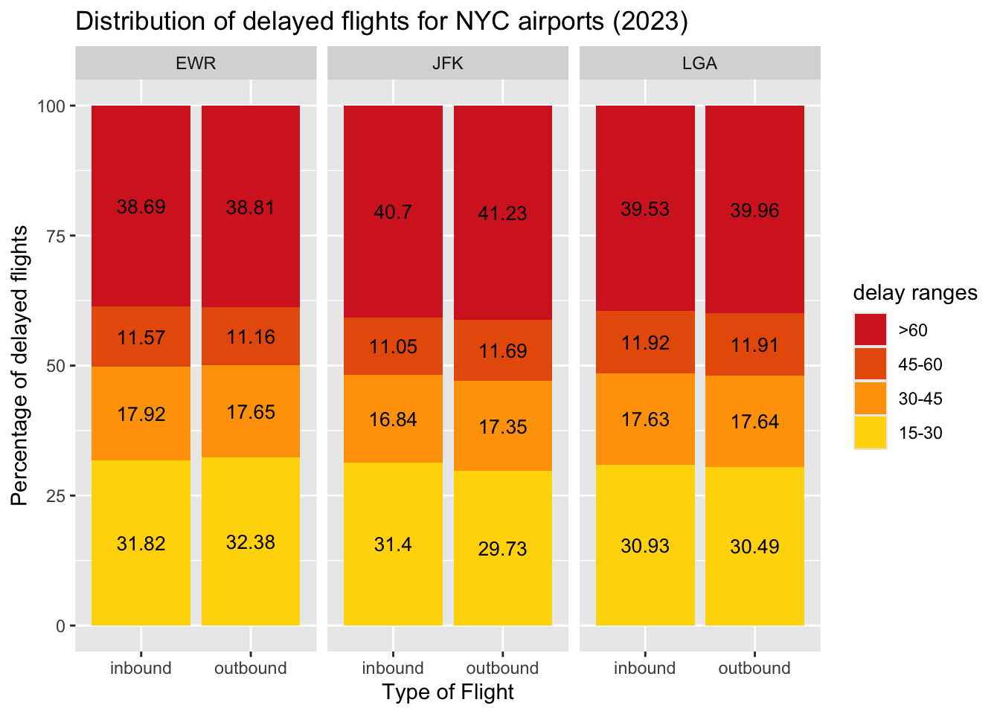

3 Results
3.1 Loading the datasets
All the five datasets (or tables) are loaded into the environment.
Code
flights <- read.csv("data/raw/flights.csv")
airlines <- read.csv("data/raw/airlines.csv")
airports <- read.csv("data/raw/airports.csv")
weather <- read.csv("data/raw/weather.csv")
planes <- read.csv("data/raw/planes.csv")3.2 Loading the required modules
Code
library(dplyr)
Attaching package: 'dplyr'The following objects are masked from 'package:stats':
filter, lagThe following objects are masked from 'package:base':
intersect, setdiff, setequal, unionCode
library(tidyr)
library(ggplot2)
library(scales)
library(forcats)
library(ggrepel)
library(ggalluvial)
library(reshape2)
Attaching package: 'reshape2'The following object is masked from 'package:tidyr':
smithsCode
NYC_AIRPORTS = c("LGA", "JFK", "EWR")3.3 On-time performance Analysis (RQ1-2)
On-time performance is defined as the percentage of flights that departed or arrived on-time. As per the rules of Federal Aviation Administration (FAA), a flight is consider to be on-time if it arrives or departs within a buffer of 15 minutes to its schedule.
In this analysis, the inbound and outbound traffic is treated separately (flight_type). For each type of traffic, two on-time performance metrics are computed as follows:
strict_otp: It considers the percentage of flights which were strictly early or on-time (*_delay <= 0).otp_increase: It considers the increase in percentage of on-time flights which were within 15 minutes of delay (*_delay <= 15).
This data is plotted as a stacked bar plot with the strict_otp denoted by green color and otp_increase denoted by yellow color.
3.3.1 By the airport (RQ1)
The data is grouped by the origin (in case of outbound flights) or the destination (in case of inbound flights) to capture trends in inbound and outbound for the NYC_AIRPORTS .
Code
inbound <- flights |> filter(!origin %in% NYC_AIRPORTS)
outbound <- flights |> filter(origin %in% NYC_AIRPORTS)
inbound_otp <- inbound |> drop_na() |>
group_by(dest) |>
summarise(total_flights = n(),
strictly_on_time = sum(arr_delay <= 0),
strict_otp = strictly_on_time/total_flights,
on_time = sum(arr_delay <= 15),
otp_increase = on_time/total_flights - strict_otp,
flight_type = "inbound")
outbound_otp <- outbound |> drop_na() |>
group_by(origin) |>
summarise(total_flights = n(),
strictly_on_time = sum(dep_delay <= 0),
strict_otp = strictly_on_time/total_flights,
on_time = sum(dep_delay <= 15),
otp_increase = on_time/total_flights - strict_otp,
flight_type = "outbound")
otp <- rbind(inbound_otp |> rename(airport = dest),
outbound_otp |> rename(airport = origin))Code
otp |> select(airport, otp_increase, strict_otp, flight_type) |>
pivot_longer(!c(airport, flight_type),
names_to = "otp_type",
values_to = "otp") |>
ggplot(aes(x = flight_type, y = otp, fill = otp_type)) +
geom_col() + facet_wrap(~airport) +
scale_fill_manual(values = c("#ffc300", "#32de84"),
name = "delay criteria",
labels = c("<= 15 minutes", "<= 0 minutes")) +
scale_y_continuous(labels = scales::percent) +
labs(
title = "On-time performance for the airports serving NYC (2023)",
x = "Type of Flight",
y = "On-time performance (in %)"
)The inbound and outbound flights at JFK and LGA had almost the same on-time performance.
However, at EWR, the inbound flights had slightly better on-time performance than outbound flights.
3.3.2 By the airline (RQ2)
In addition to the airport (origin or dest), the data is grouped by the carrier (or airline) to capture trends in the on-time performance of the different carriers for the inbound and outbound traffic at the NYC_AIRPORTS.
Code
inbound <- flights |> filter(!origin %in% NYC_AIRPORTS)
outbound <- flights |> filter(origin %in% NYC_AIRPORTS)
inbound_otp <- inbound |> drop_na() |>
group_by(dest, carrier) |>
summarise(total_flights = n(),
strictly_on_time = sum(arr_delay <= 0),
strict_otp = strictly_on_time/total_flights,
on_time = sum(arr_delay <= 15),
otp_increase = on_time/total_flights - strict_otp,
flight_type = "inbound")`summarise()` has grouped output by 'dest'. You can override using the
`.groups` argument.Code
outbound_otp <- outbound |> drop_na() |>
group_by(origin, carrier) |>
summarise(total_flights = n(),
strictly_on_time = sum(dep_delay <= 0),
strict_otp = strictly_on_time/total_flights,
on_time = sum(dep_delay <= 15),
otp_increase = on_time/total_flights - strict_otp,
flight_type = "outbound")`summarise()` has grouped output by 'origin'. You can override using the
`.groups` argument.Code
otp <- rbind(inbound_otp |> rename(airport = dest),
outbound_otp |> rename(airport = origin))Code
otp |> select(carrier, airport, otp_increase, strict_otp, flight_type) |>
pivot_longer(!c(carrier, airport, flight_type),
names_to = "otp_type", values_to = "otp") |>
ggplot(aes(x = carrier, y = otp, fill = otp_type)) +
geom_col() + facet_grid(flight_type ~ airport,
scales="free",
space = "free") +
scale_fill_manual(values = c("#ffc300", "#32de84"),
name = "delay criteria",
labels = c("<= 15 minutes",
"<= 0 minutes")) +
scale_y_continuous(labels = scales::percent) +
labs(
title = "On-time performance for the airlines serving NYC region (2023)",
x = "Airline Code",
y = "On-time performance (in %)"
)The pattern in the on-time performance of inbound and outbound flights is similar in most cases.
Allegiant Air (G4) had the best on-time performance at EWR (also among all the three airports). However, it had the least market share implying that it operated fewer domestic flights but had a very good on-time performance for them.
United Airlines (UA) and Republic Airlines (YX) have a large market share at EWR and also have a commendable on-time performance for that operational scale.
JetBlue (B6) has the highest market share at JFK but has a relatively weaker on-time performance especially for outbound flights.
Hawaiian Airlines (HA) operates very few domestic flights to JFK but had a very weak on-time performance. Moreover, it turns out that many of their flights arrived within the 15 minute buffer period.
Frontier Airlines (F9) had the worst on-time performance for outbound flights among all airlines.
This plot also highlights that analyse the on-time performance of airlines the market share must be taken into account to consider the operational scale of airline at the airport. This plot is supplements the plot for on-time performance of airlines to gather more informed insights.
3.3.3 Market share of the airline by the airport (RQ2)
The market share of a carrier is defined as the percentage of flights operated by the carrier . In the context of aviation data, the market share can be computed based on the airport (i.e. origin or dest) and route (i.e. a unordered tuple of origin and dest). For the neatness of the plot, the most popularly known carriers are given their own entry. While, the other carriers, are clubbed into a single "Other" category.
Code
airlines <- c("DL", "AA", "UA", "WN", "B6", "YX", "9E")
inbound$carrier <- ifelse(inbound$carrier %in% airlines,
inbound$carrier, "Other")
outbound$carrier <- ifelse(outbound$carrier %in% airlines,
outbound$carrier, "Other")
inbound_mkt <- inbound |> select(carrier, dest) |>
group_by(dest, carrier) |>
summarise(num_flights = n())`summarise()` has grouped output by 'dest'. You can override using the
`.groups` argument.Code
outbound_mkt <- outbound |> select(carrier, origin) |>
group_by(origin, carrier) |>
summarise(num_flights = n())`summarise()` has grouped output by 'origin'. You can override using the
`.groups` argument.Code
airport_mkt_share <-
inner_join(rename(inbound_mkt, airport = dest),
rename(outbound_mkt, airport = origin),
by = c("carrier", "airport")) |>
mutate(total_flights = num_flights.x + num_flights.y,
mkt_share = total_flights/sum(total_flights)*100.0,
mkt_share = round(mkt_share))Code
fill_color = c("DL" = "#EE7663", "AA" = "#A0BEF5", "WN" = "lightgreen",
"UA" = "cornflowerblue", "B6" = "gold", "Other" = "#91AFB3",
"YX" = "#85decb", "9E" = "#d959c6")
airport_mkt_share |> ggplot(aes(x = airport,
y = mkt_share/100, fill = fct_reorder(carrier,
mkt_share))) +
geom_col(position = "stack", width = 0.3) +
geom_text(aes(label = mkt_share),
position = position_stack(vjust = .5),
size = 3.5) +
scale_fill_manual(values = fill_color,
name = "carrier") +
scale_y_continuous(labels = scales::percent) +
labs(title = "Marketshare of Carrier by Airport (2023)",
x = "Airport",
y = "Market Share (in %)") +
coord_flip() +
theme_minimal()
The domestic market share at LGA was dominated by Delta Airlines (DL) and American Airlines (AA). This is because Endeavor Airlines (9E) is a subsidiary of Delta Airlines and Republic Airlines (YX) operates under contract for Delta, American, and United.
The domestic market share at JFK was dominated by JetBlue Airlines (B6) and Delta Airlines (DL).
United Airlines (UA) dominated more than half of the domestic market share at EWR.
3.4 Analysis of Delayed flights (RQ3-RQ5)
The *_delay is generally categorized into seven categories: less than 10 minutes, 10-20 minutes, 20-40 minutes, 40-60 minutes, and more than 60 minutes. However, as a part of the on-time performance analysis, the *_delay <= 15 minutes considered to be on-time. Therefore, we use four categories: 15-30 minutes, 30-45 minutes, 45-60 minutes, and more than 60 minutes (of equal bin width of 15 minutes).
Note: All flights explored in RQ3 and RQ4 are the ~20% delayed domestic flights from RQ1. They are given 100% proportion for better analysis.
3.4.1 Distribution of delayed flights (RQ3)
Code
categorize_delay <- function(x) {
if (x <= 15) {
return("<=15")
} else if (x > 15 & x <= 30) {
return("15-30")
} else if (x > 30 & x <= 45) {
return("30-45")
} else if (x > 45 & x <= 60) {
return("45-60")
} else {
return(">60")
}
}
inbound <- inbound |> drop_na() |>
mutate(dep_delay_fct = sapply(dep_delay, categorize_delay),
arr_delay_fct = sapply(arr_delay, categorize_delay),
flight_type = "inbound")
outbound <- outbound |> drop_na() |>
mutate(dep_delay_fct = sapply(dep_delay, categorize_delay),
arr_delay_fct = sapply(arr_delay, categorize_delay),
flight_type = "outbound")
nycflights <- rbind(inbound |>
select(dest, arr_delay_fct, flight_type) |>
rename(airport = dest, delay_fct = arr_delay_fct),
outbound |>
select(origin, dep_delay_fct, flight_type) |>
rename(airport = origin, delay_fct = dep_delay_fct))
nycflights$delay_fct <- factor(nycflights$delay_fct,
levels = c("<=15", "15-30", "30-45",
"45-60", ">60"))Code
fill_color = c(">60" = "#d62828", "45-60" = "#e85d04", "30-45" = "#ffa200",
"15-30" = "gold")
nycflights |> filter(delay_fct != "<=15") |>
group_by(airport, flight_type, delay_fct) |> summarise(count = n()) |>
mutate(percentage = round(count/sum(count)*100, 2)) |>
ggplot(aes(x = flight_type, y = percentage, fill = fct_rev(delay_fct))) +
geom_col(position = "stack") + facet_wrap(~airport) +
scale_fill_manual(values = fill_color, name = "delay ranges") +
geom_text(aes(label = percentage),
position = position_stack(vjust = .5),
size = 3.5) +
labs(
title = "Distribution of delayed flights for NYC airports (2023)",
x = "Type of Flight",
y = "Percentage of delayed flights"
)`summarise()` has grouped output by 'airport', 'flight_type'. You can override
using the `.groups` argument.
Across the
NYC_AIRPORTS, around 40% of delayed flights experience delays exceeding 60 minutes, indicating significant on-time performance challenges.JFK has slightly better performance in shorter delay categories (15–30, 30-45, 45-60 minutes). On the other hand, it has the highest proportion of long delays (>60 minutes).
The delay patterns for inbound and outbound flights are very similar. This poses an interesting question whether the inbound flights have their departure (dep_delay) and arrival delay (arr_delay) in same category and therefore, is there a cascading effect of delays? (motivation for RQ4)
3.4.2 Cascading effects of departure delays (RQ4)
Cascading effect of delays hints to whether the arrival delay (arr_delay) falls in the same range as that of the departure delay (dep_delay). The absence of a cascading effect implies that the departure delay (dep_delay) is mitigated in the air_time of the flight and arrival delay (arr_delay) is in a lower range.
In order to answer this question, we visualize the flow between the ranges of dep_delay and arr_delay with the help of an alluvial plot.
Note: the case of departure and arrival delay both being “<=15†is ignored to focus on the other flights.
Code
nycflights <- rbind(inbound, outbound)
nycflights$dep_delay_fct <- factor(nycflights$dep_delay_fct,
levels = c("<=15", "15-30", "30-45",
"45-60", ">60"))
nycflights$arr_delay_fct <- factor(nycflights$arr_delay_fct,
levels = c("<=15", "15-30", "30-45",
"45-60", ">60"))Code
fill_color = c(">60" = "#d62828", "45-60" = "#e85d04", "30-45" = "#ffa200",
"15-30" = "gold", "<=15" = "green3")
df <- nycflights |> filter(!dep_delay_fct == "<=15" & !arr_delay_fct == "<15") |>
group_by(dep_delay_fct, arr_delay_fct) |>
summarise(n = n())
df |> drop_na() |>
ggplot(aes(y = n/1000, axis1 = dep_delay_fct, axis2 = arr_delay_fct)) +
geom_alluvium(aes(fill = arr_delay_fct)) +
geom_stratum() +
geom_text(stat = "stratum", aes(label = after_stat(stratum))) +
scale_x_discrete(limits = c("Departure Delay", "Arrival Delay"),
expand = c(.05, .05)) +
scale_y_continuous() +
scale_fill_manual(values = fill_color, name = "delay ranges") +
labs(
title = "Cascading effect of departure delay (2023)",
x = "Type of delay",
y = "Number of flights (in thousands)"
)A significant number of flights with 15–30 departure delays arrive with <= 15 minutes arrival delays, thus showing effective delay recovery mechanisms for short delays, likely due to buffer times in schedules or improved flight management during transit.
For flights in the 30–60 minutes departure delay ranges, most flights either maintain or reduce the subsequent delay in arrival, once again showing an effective delay recovery mechanism likely due to adjustment made in the
speedand reducing theair_time.Flights with departure delays exceeding 60 minutes overwhelmingly result in arrival delays within the same category (>60). This emphasizes the difficulty in recovering schedules once delays surpass the 1-hour mark.
This plot also highlights that it is expected to have a higher correlation between arr_delay and dep_delay.
3.4.3 Correlation between factors affecting the delays (RQ5)
In context of aviation data, there are several real-time factors that impact the arr_delay. This data set covers couple of those factors:
visibility: impacts the ability of the pilots to spot the runway for landing and take-off.wind_speed: makes landing harder and may result in “go around†that lead to increased arrival delays.plane_age: keeps risks of technical issues if the plane is not maintained properly.air_time: may contribute to arrival delay if an alternate longer route is chosen in case of turbulence or diversions.hour: defines the weather and air-traffic conditions which affects the landing of the plane.
Code
flights_planes <- inner_join(flights,
planes |> rename(tailnum = planes.tailnum),
by = c("tailnum"))
flights_planes <- flights_planes |>
rename(dep_hour = hour) |>
mutate(arr_hour = sched_arr_time%/%100,
plane_age = 2024 - planes.year)
flights_planes_weather <- inner_join(flights_planes |> rename(hour = arr_hour),
weather |> rename(dest = origin),
by = c("dest", "month", "day", "hour"))
df <- flights_planes_weather |> select(arr_delay, dep_delay, hour, air_time,
wind_speed, visib, plane_age)
corr_mat <- round(cor(df |> drop_na()), 2)
melt(corr_mat) |>
ggplot(aes(x = Var1, y = Var2, fill=value)) +
geom_tile() + geom_text(aes(label = value), color = "white", size = 4) +
labs(
title = "Factors affecting the arrival delay (2023)",
x = "Factors affecting delays",
y = "Factors affecting delays"
)As expected from RQ4, the
dep_delayis highly correlated to thearr_delay.The weather conditions and air-traffic change hourly. Hence, there is is slight positive correlation between the
hourand thearr_delay. (A worse weather condition worsens the delays and high air-traffic congestion increases thearr_delay)The
wind_speedandarr_delayshow a weak positive correlation (0.07) implying that strong winds increase thearr_delaydue to go-arounds but the magnitude of correlation is low since the instances of strong winds are short-lived.Visibility (
visib) has a slight negative correlation which implies that lower the visibility, higher the delay. Similar towind_speed, instances of lowvisibare short-lived owing to a weak magnitude of correlation.Variables like
plane_ageandair_timehave nearly no meaningful correlation with arrival delay. This is likely because a plane can be old but may be maintained “like-new†by thecarrierand hence date of recent maintenance if available would be a better factor to consider.
3.5 Air Traffic (RQ6)
Air Traffic is the number of planes awaiting to land or take-off. Therefore, this quantity can be defined on an hourly or monthly or yearly basis. However, hourly air-traffic is the most accurate to capture patterns.
In this analysis, the quarterly hourly air-traffic is computed for both inbound and outbound flights. The deviation in the scheduled and actual air-traffic is analysed.
Note: The dataset provides sched_arr_time, arr_time(actual time), sched_dep_time, and dep_time(actual time) for each flight. If the time is 5:50am, it is given by 550 while 5:50pm is given by 1750. Therefore, integer division by 100 gives the hour of day.
Code
month2quarter <- function(month) {
if (month %in% c(1, 2, 3)) {
return("Q1")
} else if (month %in% c(4, 5, 6)) {
return("Q2")
} else if (month %in% c(7, 8, 9)) {
return("Q3")
} else {
return("Q4")
}
}
inbound_ <- inbound |> drop_na() |>
rename(sched_dep_hour = hour) |>
mutate(sched_arr_hour = sched_arr_time%/%100,
arr_hour = arr_time%/%100,
dep_hour = dep_time%/%100,
qtr = sapply(month, month2quarter))
outbound_ <- outbound |> drop_na() |>
rename(sched_dep_hour = hour) |>
mutate(sched_arr_hour = sched_arr_time%/%100,
arr_hour = arr_time%/%100,
dep_hour = dep_time%/%100,
qtr = sapply(month, month2quarter))
air_traffic_ <- rbind(inbound_ |> select(dest, arr_hour, sched_arr_hour, qtr) |>
rename(airport = dest,
hour = arr_hour,
sched_hour = sched_arr_hour),
outbound_ |> select(origin, dep_hour,
sched_dep_hour, qtr) |>
rename(airport = origin,
hour = dep_hour,
sched_hour = sched_dep_hour))
sched_air_traffic <- air_traffic_ |>
group_by(airport, sched_hour, qtr) |>
summarise(scheduled = n())`summarise()` has grouped output by 'airport', 'sched_hour'. You can override
using the `.groups` argument.Code
air_traffic <- air_traffic_ |>
group_by(airport, hour, qtr) |>
summarise(actual = n())`summarise()` has grouped output by 'airport', 'hour'. You can override using
the `.groups` argument.Code
air_traffic$hour <- factor(air_traffic$hour,
levels = c(0:24))
sched_air_traffic$sched_hour <- factor(sched_air_traffic$sched_hour,
levels = c(0:24))
air_traffic <-
left_join(air_traffic, sched_air_traffic |>
rename(hour = sched_hour),
by = c("airport", "hour", "qtr"))
air_traffic[is.na(air_traffic)] <- 0Code
air_traffic |> pivot_longer(!c("airport", "hour", "qtr"),
values_to = "numflights", names_to = "type") |>
ggplot(aes(x = hour, y = numflights, color = type, group = type)) +
geom_line() + facet_grid(qtr~airport, scales="free_x", space = "free_x") +
scale_x_discrete(breaks = c(0, 4, 8, 12, 16, 20, 24)) +
scale_color_manual(values = c("scheduled" = "tomato", "actual" = "darkblue"),
name = "Type of air traffic") +
labs(
title = "Scheduled Air Traffic v/s Actual Air Traffic (2023)",
subtitle = "over the four quarters",
x = "Hour of the day",
y = "Number of flights") +
theme_gray(16) +
theme(legend.position="bottom",
strip.text.y = element_text(angle = 0))The frequency of flights is highest between hours 6 to 20 and is low at other times. For all 3 airports, the scheduled and actual number of flights are pretty close to each other, with major overlap, indicating efficient on-time performance consistently.
Over the 4 quarters, we observe similar patterns in flight frequency for a particular airport. This tells us that each airport maintains its same schedule throughout the 4 quarters. Of course, the schedule is different for different airports.
The curves for LGA are pretty uniform because it is a domestic airport (except flights from Canada) and hence the dataset depicts its patterns well. On the other hand, a significant share of the air-traffic at JFK and EWR is governed by international air traffic.
3.6 Monthly trends in delays (RQ7)
The monthly trends in the delay show the variation in the number of delayed flights (across the four categories) by the season of the year (i.e. Spring, Summer, Fall, Winter). It is computed by grouping the data over the month and *_delay category.
Code
inbound <- inbound |> drop_na() |>
mutate(dep_delay_fct = sapply(dep_delay, categorize_delay),
arr_delay_fct = sapply(arr_delay,
categorize_delay),
flight_type = "inbound")
outbound <- outbound |> drop_na() |>
mutate(dep_delay_fct = sapply(dep_delay, categorize_delay),
arr_delay_fct = sapply(arr_delay,
categorize_delay),
flight_type = "outbound")
nycflights <- rbind(inbound |>
select(dest, arr_delay_fct, flight_type, month) |>
rename(airport = dest, delay_fct = arr_delay_fct),
outbound |>
select(origin, dep_delay_fct, flight_type, month) |>
rename(airport = origin, delay_fct = dep_delay_fct))
nycflights$delay_fct <- factor(nycflights$delay_fct,
levels = c("<=15", "15-30", "30-45",
"45-60", ">60"))Code
colors = c(">60" = "#d62828", "45-60" = "#e85d04",
"30-45" = "#ffa200", "15-30" = "gold")
nycflights |> filter(delay_fct != "<=15") |>
group_by(month, delay_fct, airport) |>
summarise(count = n()) |> mutate(percentage = count/sum(count)) |>
ggplot(aes(x = factor(month), y = percentage,
color = delay_fct, group = delay_fct)) +
geom_line() +
facet_wrap(.~airport, scale = "free_x", ncol = 1) +
scale_y_continuous(labels = scales::percent) +
scale_color_manual(values = colors, name = "delay ranges") +
scale_x_discrete(labels = month.abb) +
labs(
title = "Percentage of delayed flights over the 12 months (2023)",
x = "Month",
y = "Percentage of delayed flights") +
theme(legend.position="bottom")`summarise()` has grouped output by 'month', 'delay_fct'. You can override
using the `.groups` argument.EWR observes a peak in delays during the Spring season followed by a dip in the Summer and Fall seasons. JFK observes a gradual increase in delays throughout the year resulting in a peak in the Fall season. LGA, on the other hand, observes a peak in delays during the Winter months, followed by a big dip in the Spring season, and then average delays in the remaining months.
Thus, each airport observes a different pattern throughout the year, there isn’t much similarity between them.
3.7 Geo-spatial distribution of delay (RQ8)
The geo-spatial location of an airport is provided by the latitude (lat) and longitude (lon) in the airports data frame. This data provides an understanding into the routes out of NYC_AIRPORTS and their average arr_delay (for inbound flights) and dep_delay (for outbound flights).
Note: The US airports in Alaska and Hawaii are ignored for this analysis. Moreover, airport codes are provided only for those airports where the performance deviates from on-time (i.e. avg_*_delay <= 15).
Code
colors = c(">60" = "#d62828", "45-60" = "#e85d04", "30-45" = "#ffa200",
"15-30" = "gold", "<=15" = "green3")
states = map_data("state")
airports_usa <- airports |>
filter(airports.lon < 0 & airports.lat < 50 & airports.lon > -140)
inbound_avg_delay <-
inner_join(inbound,
airports_usa |> rename(origin = airports.faa),
by = c("origin")) |>
group_by(origin, airports.lat, airports.lon) |>
summarise(avg_arr_delay = sapply(mean(arr_delay), categorize_delay))`summarise()` has grouped output by 'origin', 'airports.lat'. You can override
using the `.groups` argument.Code
outbound_avg_delay <-
inner_join(outbound,
airports_usa |> rename(dest = airports.faa),
by = c("dest")) |>
group_by(dest, airports.lat, airports.lon) |>
summarise(avg_dep_delay = sapply(mean(dep_delay), categorize_delay))`summarise()` has grouped output by 'dest', 'airports.lat'. You can override
using the `.groups` argument.Code
inbound_avg_delay$avg_arr_delay <-
factor(inbound_avg_delay$avg_arr_delay,
levels = c("<=15", "15-30", "30-45", "45-60", ">60"))
inbound_avg_delay$avg_dep_delay <-
factor(outbound_avg_delay$avg_dep_delay,
levels = c("<=15", "15-30", "30-45", "45-60", ">60"))
inbound_avg_delay <- inbound_avg_delay |>
rename(inbound = avg_arr_delay,
outbound = avg_dep_delay)
inbound_avg_delay <- inbound_avg_delay |>
pivot_longer(!c("origin", "airports.lat", "airports.lon"),
values_to = "delay",
names_to = "flight_type")Code
ggplot(data = states) +
geom_polygon(mapping=aes(x = long,y = lat,group = group),
color = "black",fill = "white") +
geom_point(data = inbound_avg_delay,
mapping = aes(x = airports.lon, y = airports.lat,
color = delay)) +
geom_text_repel(data = inbound_avg_delay |>
filter(delay %in% c("45-60", ">60")),
mapping = aes(x = airports.lon, y = airports.lat,
label = origin), color = "tomato",
nudge_y = -0.6) +
geom_text_repel(data = inbound_avg_delay |>
filter(delay %in% c("15-30", "30-45")),
mapping = aes(x = airports.lon, y = airports.lat,
label = origin), color = "black",
nudge_y = -0.6) +
facet_wrap(~flight_type, ncol = 2) +
scale_color_manual(values = colors, name = "delay ranges") +
theme(legend.position = "bottom") +
labs(
title = "Inbound (arr_delay) and Outbound (dep_delay) flight delay by airports (2023)",
x = "Longitude",
y = "Latitude")We observe that on the East Coast (short distance flights), most airports have a <=15 minute delay range whereas on the West Coast (long distance flights), there are many airports that belong to higher delay ranges.
There are more airports in the 15-30 minute delay range in outbound as compared to inbound. However, in the high delay ranges (of greater than 30 minutes), inbound is more than outbound. Overall, there is a decent similarity between the two, with a few differences.
3.8 Delays for Top-10 busiest routes (RQ9)
Top-k busiest routes are defined as those routes which have Top-k frequency of yearly flights. For this analysis, the set of airlines is restricted to American (AA), Delta (DL), United (UA), and JetBlue (B6).
Note: Here, k = 10. Moreover, unordered pairs of origin and dest are only considered and the analysis is broken down into inbound and outbound flights.
Code
popular_airlines = c("AA", "DL", "UA", "B6")
colors = c(">60" = "#d62828", "45-60" = "#e85d04", "30-45" = "#ffa200",
"15-30" = "gold", "<=15" = "green3")
busiest_routes <- inbound |>
select(origin, dest, dep_delay, arr_delay) |> drop_na() |>
group_by(origin, dest) |>
summarise(numflights = n()) |>
arrange(-numflights) |> head(10) |> select(origin, dest)`summarise()` has grouped output by 'origin'. You can override using the
`.groups` argument.Code
inbound_alluvial <- inbound |> drop_na() |>
filter(origin %in% busiest_routes$origin & carrier %in% popular_airlines) |>
mutate(delay_fct = sapply(arr_delay, categorize_delay),
flight_type = "Inbound") |>
group_by(origin, dest, carrier, delay_fct, flight_type) |>
summarise(n = n())`summarise()` has grouped output by 'origin', 'dest', 'carrier', 'delay_fct'.
You can override using the `.groups` argument.Code
outbound_alluvial <- outbound |> drop_na() |>
filter(dest %in% busiest_routes$origin & carrier %in% popular_airlines) |>
mutate(delay_fct = sapply(dep_delay, categorize_delay),
flight_type = "Outbound") |>
group_by(origin, dest, carrier, delay_fct, flight_type) |>
summarise(n = n())`summarise()` has grouped output by 'origin', 'dest', 'carrier', 'delay_fct'.
You can override using the `.groups` argument.Code
alluvial <- rbind(inbound_alluvial, outbound_alluvial)
alluvial$delay_fct <-
factor(alluvial$delay_fct,
levels = c("<=15", "15-30", "30-45", "45-60", ">60"))Code
alluvial |> drop_na() |>
ggplot(aes(y = n/1000, axis1 = factor(origin),
axis2 = factor(carrier), axis3 = factor(dest))) +
geom_alluvium(aes(fill = delay_fct), width = 1/12) +
geom_stratum() +
geom_text(stat = "stratum", aes(label = after_stat(stratum))) +
facet_wrap(~flight_type) +
scale_x_discrete(limits = c("Origin", "Carrier", "Destination"),
expand = c(.05, .05))+
scale_fill_manual(values = colors, name = "delay ranges") +
labs(
title = "On-time performance for the top 10 busiest routes from NYC (2023)",
subtitle = "with popular airlines",
y = "Number of flights (in thousands)") +
theme(panel.spacing = unit(1, "lines"))The majority of flights fall in the green zone (≤15 minutes delay), indicating good on-time performance for most routes. Delays above 30 minutes (orange and red links) are relatively rare but are visible, especially for specific carriers and routes.
Atlanta (ATL) is a major destination and origin for NYC flights, with a significant number of flights represented by thicker flows in the diagram. Other popular routes include Boston (BOS), Chicago (ORD), and Los Angeles (LAX).
EWR (Newark), JFK (John F. Kennedy), and LGA (LaGuardia) handle similar amount of air traffic in terms of the busiest domestic routes.
JFK appears to handle a larger proportion of long-haul domestic flights (e.g., LAX), while LGA has more regional routes (e.g., BOS, MCO).
Both
inboundandoutboundflight have similar patterns, suggesting balanced traffic for NYC’s busiest routes. Routes involving LAX and SFO show slightly more yellow, orange, and red links, indicating that these long-distance routes experience higher delays. Shorter routes like LGA to BOS or MIA show predominantly green links, suggesting better punctuality.